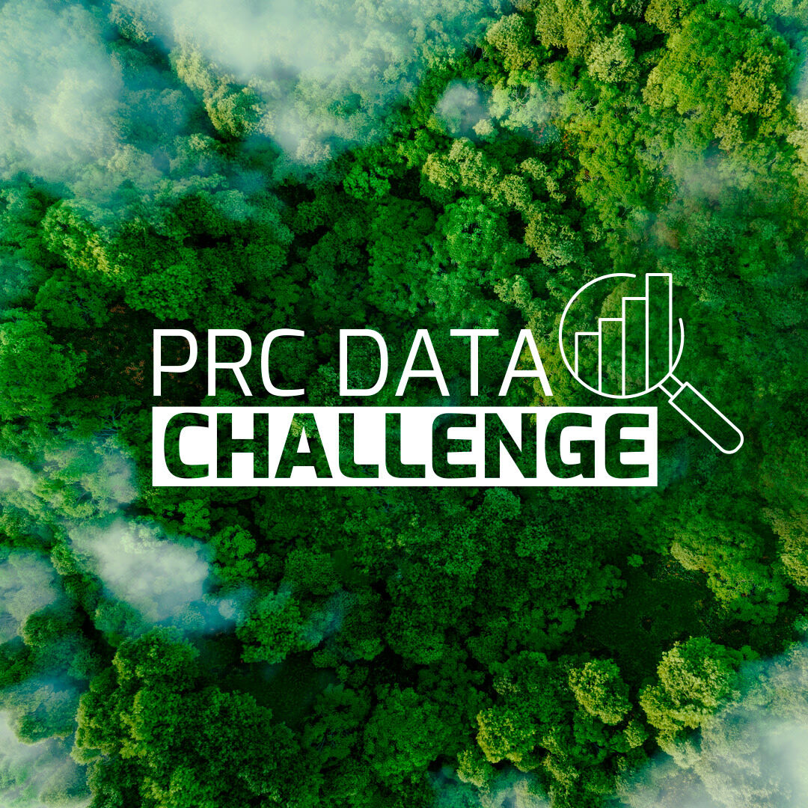

PRC Data Challenge
The Performance Review Commission (PRC) Data Challenge aims at engaging with data scientists, even without Aviation background, to create teams and compete to build an open Machine Learning (ML) model able to accurately infer the Actual TakeOff Weight (ATOW) of a flown flight.

The Data
We provide information for 369013 flights flown all over Europe in 2022. Flight data include origin/destination airport, aircraft type, off-block and arrival times,…and estimated TakeOff Weight (TOW). Thanks to the collaboration with OpenSky Network (OSN) we added the relevant trajectories at (max) 1 second granularity, accounting for around 158 GiB of parquet files.
The 105959 flights of the submission_set.csv will be used to rank the intermediate submissions before the deadline, and an additional 52190 will be used for the final prize ranking.
See the Data page for more details.
The Prize
A total prize of \(5000\) EUR will be distributed among the finalists’ teams.
Each finalist will receive a prize to acknowledge their innovative ideas and contributions towards solving the posed challenge problem.
The submission deadline was on: 2024-10-28T00:00:00Z.
Winners’ announcements took place at the 12th edition of OpenSky Symposium in Hamburg on 7th–8th November 2024.
Code and docs
Code and documentation from participating teams is available. We forked all public repositories of participating teams and grouped them in a GitHub organization
https://github.com/prc-data-challenge-2024
You can find the slides about the PRC Data Challenge here as presented during the Symposium.
And the Winners are…
-
- Richard Alligier
- David Gianazza
Professors at Ecole Nationale de l’Aviation Civile (ENAC), Toulouse, France
Spending voucher: 2500 EUR
-
- Mayara C. R. Murça
- Carolina R. Lima
- Gabriel A. Melo
- João B. T. Szenczuk
- João P. A. Dantas
- Lucas O. Carvalho
- Marcos R. O. A. Máximo
Professors and graduate students affiliated with the Aeronautics Institute of Technology (ITA), Brazil
Spending voucher: 1750 EUR
-
- Aidana Tassanbi
- M. F. Rahman
- Bintang A.S.W.A.M
TU Delft students
Spending voucher: 750 EUR
The dataset and the companion paper are available as follows:
The why of Why
We got many questions about this challenge. We grouped and answered them as follows:
Why is the challenge focusing on ATOW?
ATOW is an important input for models estimating fuel burnt and derived gaseous emissions.
The current lack of openly available ATOW is typically compensated by assuming it to be equal to a certain percentage of the Maximum TakeOff Weight (MTOW) for the relevant aircraft model.
With this challenge we aim at making available a better way to estimate ATOW, i.e. an Estimated TakeOff Weight (ETOW).Why an Open model?
The PRC (and many other Organizations, industrial actors and academia by the way) is interested in studies assessing the impact of Aviation to Climate Change. To this extent the availability of an open model allows for reproducibility, transparency of the results presented and in the end to trust in the performed analyses.Why via a Data Challenge?
The PRC thinks that there is a great pool of Data Scientists (much bigger than that of Aviation Experts!) that could help defining the open model of the Challenge.
The Challenge also makes it possible to have a white box approach to the way the model is being defined which goes in the direction of transparency. This transparency is a way to build trust, reproducibility and eventually evolve a collaboration to improve the understanding (and the reduction) of the impact of Aviation to the environment.
Eligibility for Participation
Any data science and/or aviation enthusiast team or individual can participate to the challenge.
Please send an email for the team creation with the following info (this will be publicly visible [apart from emails] in a dedicated teams’ page):
- an OSN account (create one if you do not have it yet)
- corresponding member: name + email address
- list of members: team member name (eventual affiliation) + email address (optional)
- who you are: a description of the team
- rationale for participation
to
challenge AT opensky-network.org
A little while later, you will receive the team name and the relevant access/secret keys to obtain the Data via your OSN account; something like:
{
"team_name": "team_warm_donkey",
"team_id": "b8e3a438-d2f2-4a11-bf28-e7a8f84cf3db",
"bucket_access_key": "blah",
"bucket_access_secret": "blahblah"
}Anyone affiliated with OpenSky Network or EUROCONTROL is not eligible to participate to the PRC Data Challenge.
Acknowledgements
We would like to praise the following organisations, companies and individuals for their participation and support in the provision of advise, data and infrastructure for the challenge.
- Airlines: for willingness to collaborate and support for the initiative
- OpenSky Network: for collection and making available Automatic Dependent Surveillance–Broadcast (ADS-B) trajectories and hosting of the challenge infrastructure. (John Fitzgerald, Allan Tart, Martin Strohmeier, Vincent Lenders)
- Prof Junzi Sun (TU Delft): for wisely pre-processing, enhancing (meteorological data via fastmeteo), locally storing OSN trajectories and then making them available for the challenge
- Dr Xavier Olive (ONERA): for advise and the invaluable traffic library
- EUROCONTROL: for providing the relevant flight list (via Network Manager) and estimating TOW (Aviation Intelligence Unit).
Special thanks to AIU colleagues that helped with conception and setup (Rainer KOELLE), data collection (Yves DE WANDELER) and evaluation (Quinten GOENS). - José Miguel de PABLO GUERRERO (PRC Commissioner): for supporting and pushing for this initiative.
List of Acronyms
ADS-B: Automatic Dependent Surveillance–Broadcast
ATOW: Actual TakeOff Weight
ETOW: Estimated TakeOff Weight
ML: Machine Learning
MTOW: Maximum TakeOff Weight
OSN: OpenSky Network
PRC: Performance Review Commission
TOW: TakeOff Weight